2010年9月27日から約１週間ほど、北欧３カ国（ノルウェー、スウェーデン、フィンランド）を旅行してきました。海外旅行はムルモ屋本舗を開設してから初めてで、我らがムルモさんもいよいよ世界へ進出です！ ちなみに海外旅行ツアーを利用せずに、計画から手配まですべて個人で行ったのでかなり大変でした。
それでは写真とともにレポートいたします！
2010年9月27日(月)
日本は前日夜からの雨が降り続いていました。
初日の月曜日は目的地（ノルウェーのトロムソ）に向けて、飛行機に３回乗ります。
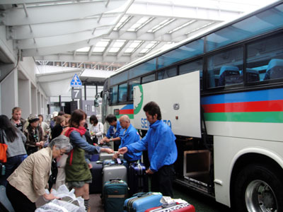
成田空港へ向けて、所沢駅からバスで出発。
しかし月曜の朝は首都高の渋滞がひどくて、いきなり冷や汗ものでした。
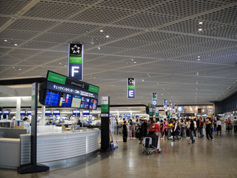
なんとか成田空港に到着。
ターミナル広すぎて、目的の航空会社を探すのが大変…。
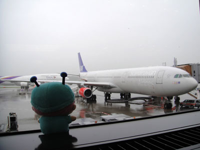
「これから乗るスカンジナビア航空でしゅ」
これに乗ってまずは１回目の経由地である
デンマークの首都コペンハーゲンに向かいます。
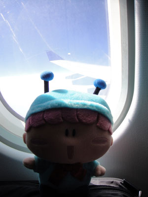
「雲の上から撮影でしゅ～。雲の上は青空でしゅね」
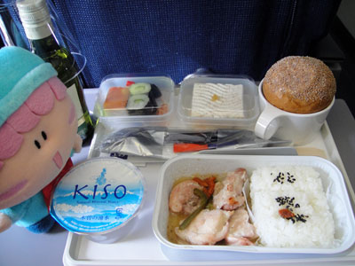
「機内食美味しそうでしゅね～」
後ろのワインはご愛敬で(^^;。
飛行機に乗ってほどなくして１回目の機内食となりました。
日本からの積み込んだ機内食なのでなかなか美味しかったです。
しかしお米とはこれでしばらくお別れです。。。
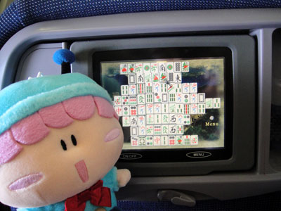
飛行機の座席それぞれにモニターが付いていて、映画を見たり
ゲームで遊べたりすることができます。
私は上海と数独ばかり遊んでいました(^^;。
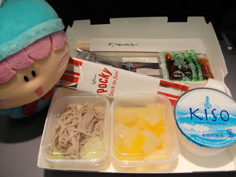
到着２時間前の２回目の機内食（軽食）です。
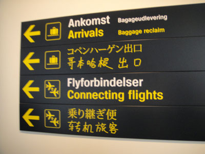
コペンハーゲン空港に到着～。
案内には日本語もありました。
中国語のフォントが・・・。
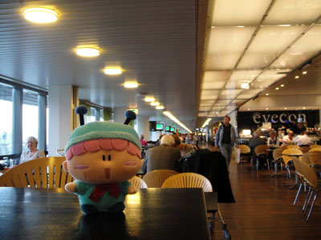
コペンハーゲンの空港はとにかくオシャレ！
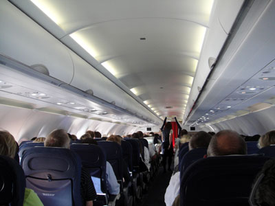
次はノルウェーの首都オスロへ向かいます。
周りは日本人が全然いなくていよいよ海外に来たことを実感。

オスロ空港に到着～。
ノルウェーとスウェーデンの空港や駅は
みんなこの黒地に白・黄の案内標識に統一されていて、
遠くからでも見やすくてGood！
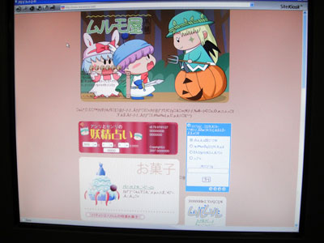
搭乗口付近で無料でインターネットが使える端末が置いてありました。
日本語は文字化けしまくりですね～。
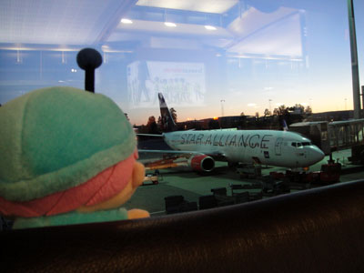
「もう一回飛行機に乗るんでしゅか！？」
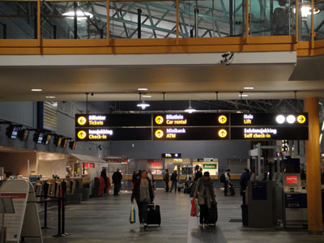
ノルウェーの北にあるトロムソ空港に到着。
さすがに小さいですね。
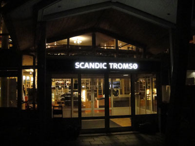
タクシーでスカンディックホテルへ。
ここに２晩泊まります。
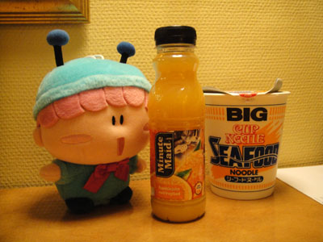
今晩の夕食はカップラーメンとミニッツメイド。
「日本と変わらないでしゅね」
2010年9月28日(火)
北極に近い北緯65～70度がオーロラ帯と呼ばれ、オーロラが見やすい地域とされています。 訪れたトロムソはまさにそのオーロラ帯で、夜にオーロラを見るべくトロムソにやってきました。
…が、天気は朝から雨。。
オーロラは星が見えるほどの晴天じゃないと見れないのです(T-T)。
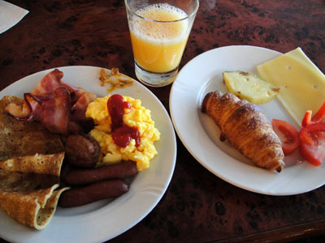
ホテルの朝食。
これから毎日こんな食事が続くことにまだ気がついていなかったのでした…。
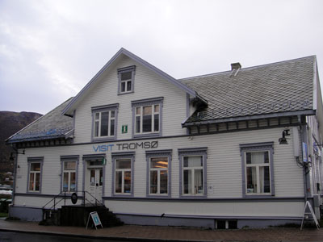
トロムソの観光案内所。
ここで路線バスや観光地についていろいろ聞きました。
（もちろん英語で）
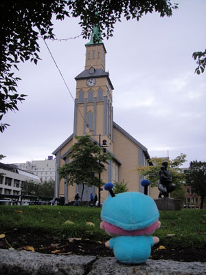
「トロムソ大聖堂は立派でしゅね～」
後ろから視線を感じましたが気にしない気にしない。。

トロムソの街並み。
いかにもヨーロッパな風景にいきなり感動しました。
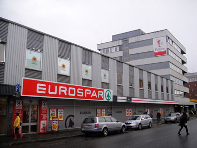
トロムソのスーパー。
日本のホットスパーとの関連は！？
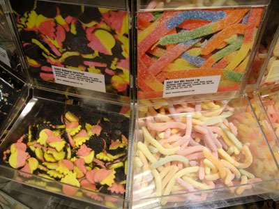
甘そうなお菓子がたくさん売られていました。
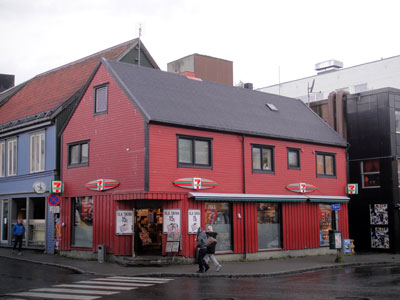
セブンイレブンもオシャレ！
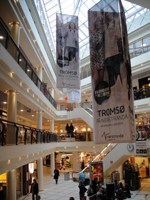
トロムソのショッピングモール。
日本と同じような雰囲気で妙に落ち着きます(^^;。
DVDショップではジブリ作品がいくつか売られていました。
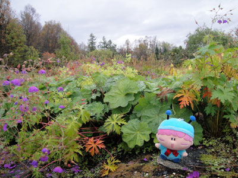
バスに乗ってトロムソの植物園へ行きました。
天気が良ければ…。
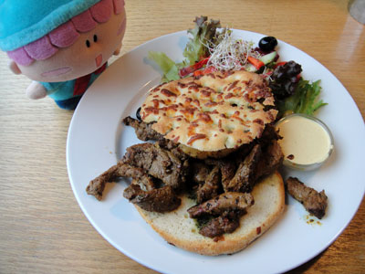
お昼はガイドブックに載ってたアンナガーデンというお店で食べました。
これ何のお肉だろう…？（美味しかったです）

ポーラリア（北極圏水族館）にて、アザラシと目があった！！
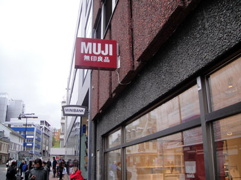
トロムソには無印良品もあり、
日本のタグが付いたままの商品も売られていました。
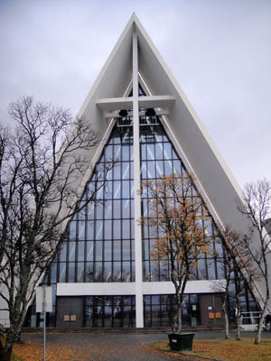
北極教会。
三角形の建物は遠くからでも目立ちます。
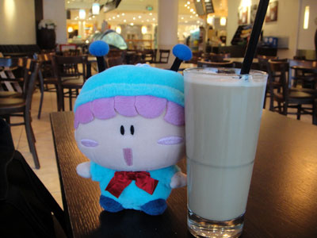
さっきのショッピングモールでカフェモカを飲みました。
「これホットでしゅよ」
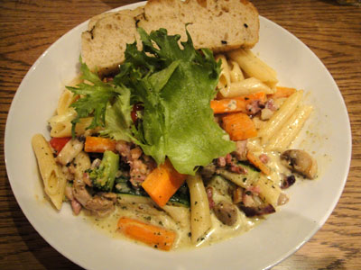
夕食はバーみたいなお店で「ミラノパスタ」を食べました。
量が多すぎて食べきれなかった…。
結局夜になっても星空にならなかったので、オーロラ観測はあきらめました。。
（がんばって外へ見に行きましたけど）
(2010/10/7)